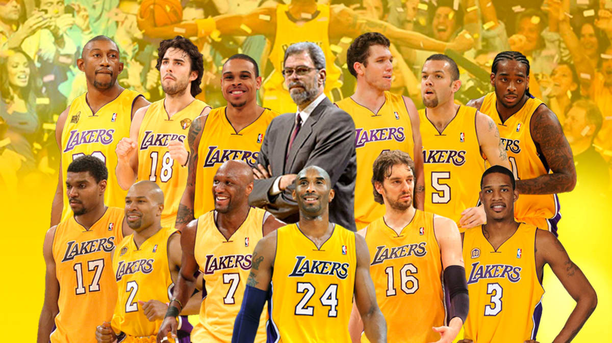
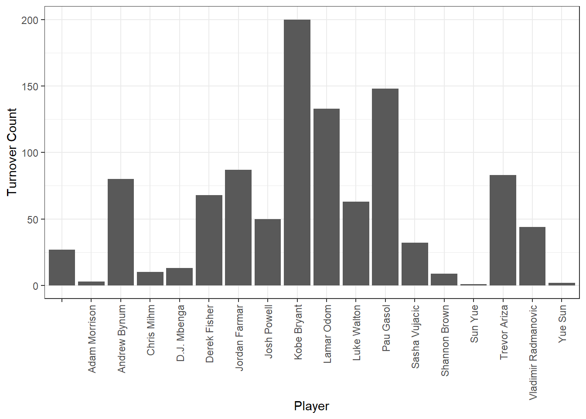
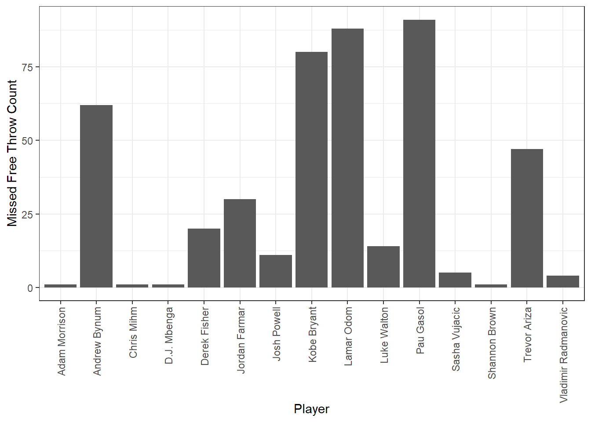
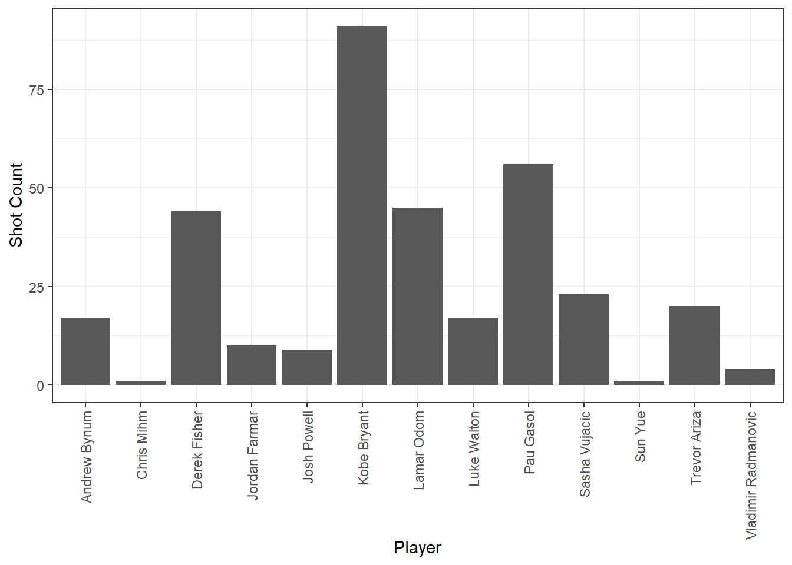
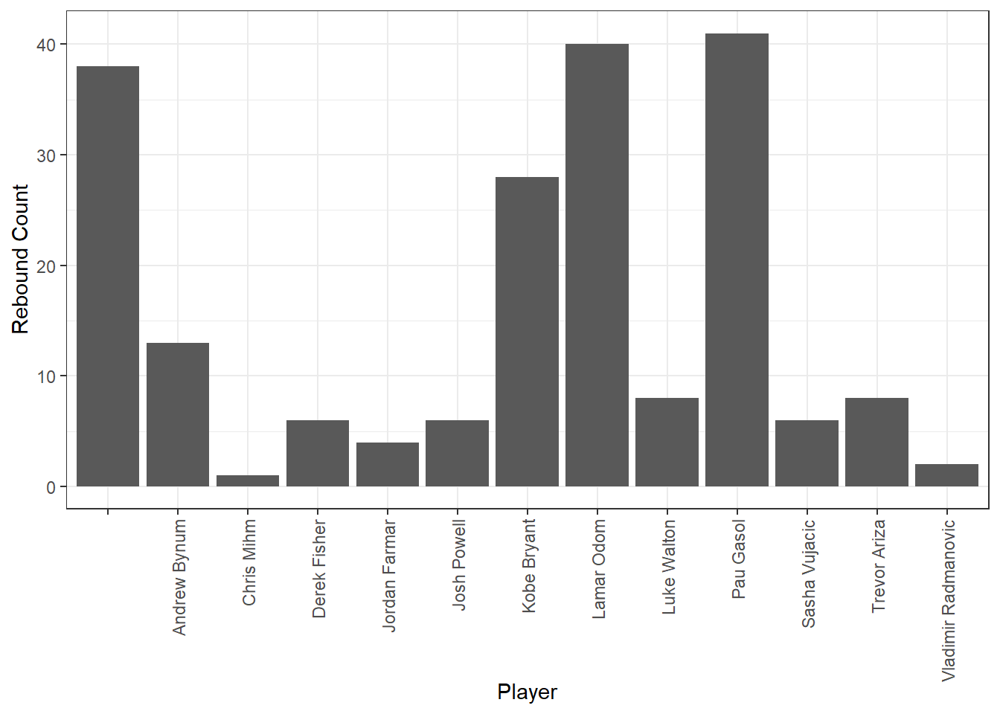

#create an object "lakers" that includes our data set
lakers <- lubridate::lakers Week 2 Homework: Asking Questions
To receive full points on this homework, please submit a document containing all of the requested screenshots on Brightspace. You should also make sure to run all the code chunks in this document for the tutorial to run properly.
Scenario: You are a data scientist for the LA Lakers!

For this week’s coding exercise we are going to pretend that you are a data scientist working for the Los Angeles Lakers during the 2009 off-season. You are coming out of a championship win last season and team manager, Mitch Kupchak, and coach, Phil Jackson, are looking for insights into how they can win another one next season. They come to you asking to do an analysis using data from last season to help them figure out where they should focus their efforts to improve the team. In this case, instead of having a question and finding data to address that question, we are given a data set and are then tasked with asking what questions can we ask with these data?
For the sake of this tutorial, I am going to tell you that the questions we are going to ask are as follows:
Which players committed the most turnovers?
Which players missed the most free throws?
Last season, the Boston Celtics and the Cleveland Cavaliers won more games during regular season than the Lakers. Which Lakers players performed the best against these teams in terms of attempted shots? Rebounds? Assists?
Getting started
First things first, we load our data set and take a look at it. I am only going to show you some of the ways you can explore this data set, then provide you with a written summary. In reality, you would spend a lot of time taking a look at each column and familiarizing yourself with what the data entail.
MAKE SURE TO RUN ALL CODE CHUNKS.
NOTE: the lubridate package (an R add-on) has this data set pre-loaded in it, which is why the above code works. We are using the assignment arrow “<-” to create an object “lakers” that is the lubridate lakers data set.
#the glimpse function allows us to take a quick look at the data/data structure
glimpse(lakers)Rows: 34,624
Columns: 13
$ date <int> 20081028, 20081028, 20081028, 20081028, 20081028, 20081028, …
$ opponent <chr> "POR", "POR", "POR", "POR", "POR", "POR", "POR", "POR", "POR…
$ game_type <chr> "home", "home", "home", "home", "home", "home", "home", "hom…
$ time <chr> "12:00", "11:39", "11:37", "11:25", "11:23", "11:22", "11:22…
$ period <int> 1, 1, 1, 1, 1, 1, 1, 1, 1, 1, 1, 1, 1, 1, 1, 1, 1, 1, 1, 1, …
$ etype <chr> "jump ball", "shot", "rebound", "shot", "rebound", "shot", "…
$ team <chr> "OFF", "LAL", "LAL", "LAL", "LAL", "LAL", "POR", "LAL", "LAL…
$ player <chr> "", "Pau Gasol", "Vladimir Radmanovic", "Derek Fisher", "Pau…
$ result <chr> "", "missed", "", "missed", "", "made", "", "made", "", "mad…
$ points <int> 0, 0, 0, 0, 0, 2, 0, 1, 0, 2, 2, 0, 0, 2, 2, 0, 0, 2, 0, 0, …
$ type <chr> "", "hook", "off", "layup", "off", "hook", "shooting", "", "…
$ x <int> NA, 23, NA, 25, NA, 25, NA, NA, NA, 36, 30, 34, NA, 15, 46, …
$ y <int> NA, 13, NA, 6, NA, 10, NA, NA, NA, 21, 21, 10, NA, 17, 9, 10…NOTE: It’s a good idea to make note of what form the data takes in each column. In this case, all columns are character strings
#the head function prints the first six rows of the data
head(lakers) date opponent game_type time period etype team player
1 20081028 POR home 12:00 1 jump ball OFF
2 20081028 POR home 11:39 1 shot LAL Pau Gasol
3 20081028 POR home 11:37 1 rebound LAL Vladimir Radmanovic
4 20081028 POR home 11:25 1 shot LAL Derek Fisher
5 20081028 POR home 11:23 1 rebound LAL Pau Gasol
6 20081028 POR home 11:22 1 shot LAL Pau Gasol
result points type x y
1 0 NA NA
2 missed 0 hook 23 13
3 0 off NA NA
4 missed 0 layup 25 6
5 0 off NA NA
6 made 2 hook 25 10#we can look at the unique values for specific columns using the unique function and the $ operator
unique(lakers$etype) #the type of plays recorded [1] "jump ball" "shot" "rebound" "foul" "free throw"
[6] "turnover" "timeout" "sub" "violation" "ejection" NOTE: the “$” operator allows us to select a column within a dataframe. In the above code chunk, we used the unique() function on the etype column by typing lakers$etype. The line of code says look in the lakers dataframe for the etype column and give us a list of the unique values present in that column.
We see that our data includes game logs from the entire season with the following variables (variables we will be actively using in this tutorial are bolded):
date: Date of the game
opponent: Three letter code for the opponent team the Lakers played against
game_type: Whether the game was home or away
time: The time on the game clock when the play was recorded (i.e. time left in the quarter)
period: Quarter of the game (1, 2, 3, 4, 5), with 5 representing overtime
etype: Type of play recorded
team: The team that made the play
player: The player that made the play
result: The result of the play - blank for non-shots, “missed” or “made” for shots
points: Number of points the play resulted in
type: Type of play - type of foul for fouls, type of shot for shots, type of rebound for rebounds
x: The location along the x plane (court width) of the play (shots only)
y: The location along the y plane (court length) of the play (shots only)
Question 1: Who committed the most turnovers?
For this first question, I will walk you through how to find the answer, showing you some important data wrangling tools along the way. We will spend A LOT more time exploring these tools in future weeks, so don’t worry too much if you don’t follow all the code.
- Which players committed the most turnovers?
To answer this, we first need to do some data filtering. We are only interested in plays made by the Lakers, so we need to filter the data to only include “LAL” observations in the “team” column.
#filter the data so we only have plays made by the Lakers
lakersQ1 <- lakers %>%
filter(team == "LAL")
#check to see if that worked using the unique function on the column of interest
unique(lakersQ1$team) #should only print "LAL"[1] "LAL"In the above code chunk, I introduced a new coding operator, the pipe, denoted by “%>%” or “|>”. You can imagine this translating to “and then”. We are creating a new object called lakersQ1. To create this object we take the lakers data “and then” we filter it so that the “team” column only includes “LAL”. We use “==” when filtering (not a singular “=” sign). NOTE: we are using the dplyr package filter() function, not the base R filter() function.
Now that we have done that, we need to determine which players committed the most turnovers by keeping only observations associated with turnovers. We can again accomplish this using filtering.
#only pull data related to turnovers
lakersQ1 <- lakersQ1 %>%
filter(etype == "turnover")
#take a look at the first 6 rows to see if we only have turnovers
head(lakersQ1) date opponent game_type time period etype team player
1 20081028 POR home 08:15 1 turnover LAL Kobe Bryant
2 20081028 POR home 03:21 1 turnover LAL Vladimir Radmanovic
3 20081028 POR home 02:52 1 turnover LAL Lamar Odom
4 20081028 POR home 01:12 1 turnover LAL Jordan Farmar
5 20081028 POR home 06:50 2 turnover LAL Kobe Bryant
6 20081028 POR home 02:35 2 turnover LAL Derek Fisher
result points type x y
1 0 NA NA
2 0 NA NA
3 0 NA NA
4 0 NA NA
5 0 NA NA
6 0 NA NANOTE: when we use the assignment arrow (<-) with the same object name as the one we made previously (“lakersQ1”), we are overwriting our original lakersQ1 object and creating a new one.
Now we can create a visualization to see who committed the most turnovers. Again, we will be spending a lot more time working through how to make visualizations, so don’t worry too much about the code. Focus more on interpreting the output.
ggplot(lakersQ1, aes(x = player)) + #create a plot with player as the x axis
geom_bar() + #plot a bar plot
theme_bw() + #add a theme
labs(x = "Player", y = "Turnover Count") + #change the axis labels
theme(axis.text.x = element_text(angle = 90, vjust = 0.5, hjust = 1)) #adjust the x axis labels so we can read the player names
We see that Kobe Bryant, Pau Gasol, and Lamar Odom committed the most turnovers across the season. Assuming you know nothing about basketball, I will tell you that these are three of the biggest stars on this championship team. This means they probably got waayyyy more playing time than the other players, giving them more opportunity to commit a turnover in the first place. This is an important lesson for multiple reasons:
You should always evaluate your results to see if they make sense in the context of the bigger picture. Kobe Bryant is one of the greatest NBA players of all time and played with the Lakers his entire 20 year career. If we were using this as a metric for deciding who gets traded, we probably haven’t found a very good metric. But then again, even Kobe has room for improvement… 200 seems like a lot, and he could use this information to focus his efforts on reducing turnovers.
Sometimes folks you are working with think they want the answer to one question (who committed the most turnovers?), but what they really want is the answer to a different question (who committed the most turnovers accounting for how often they played?).
What’s something we could do to make this a fairer picture of turnover rates?
#WRITE YOUR ANSWER TO THE ABOVE QUESTION HERE AND SCREENSHOT
We could divide the number of turnovers each player committed by the total amount of time they played.
(Any response along these lines was accepted)Question 2: Which players missed the most free throws?
Let’s move on to the second question.
- Which players missed the most free throws?
First thing we have to do is again pull only data related to observations of plays commited by the Lakers (not their opponents).
Adjust the following code chunk so that you create an object called “lakersQ2” that filters for only plays made by the Lakers. (HINT: Look back at how we tackled this task in the first question.)
#filter so we only have observations of Laker plays
lakersQ2 <- lakers %>%
filter(team == "LAL") #REPLACE [FILL ME IN] WITH YOUR RESPONSE
#check to see if that worked using the unique function on the column of interest
unique(lakersQ2$team) #REPLACE [FILL ME IN] WITH YOUR RESPONSE[1] "LAL"Now we need to filter so we only have data associated with free throws.
Adjust the following code to accomplish that task. (HINT: Look at how we filtered to only have observations of turnovers in the first question.)
#filter so we only have observations of free throws
lakersQ2 <- lakersQ2 %>% #use the object you just created and overwrite it
filter(etype == "free throw") #REPLACE [FILL ME IN] WITH YOUR RESPONSE
#take a look at your new data
head(lakersQ2) date opponent game_type time period etype team player result
1 20081028 POR home 11:22 1 free throw LAL Pau Gasol made
2 20081028 POR home 00:29 1 free throw LAL Jordan Farmar made
3 20081028 POR home 00:29 1 free throw LAL Jordan Farmar made
4 20081028 POR home 11:15 2 free throw LAL Lamar Odom missed
5 20081028 POR home 08:33 3 free throw LAL Kobe Bryant missed
6 20081028 POR home 07:07 3 free throw LAL Kobe Bryant made
points type x y
1 1 NA NA
2 1 NA NA
3 1 NA NA
4 0 NA NA
5 0 NA NA
6 1 NA NAFinally, we also need to filter so we are only looking at missed free throws.
Adjust the code chunk below to do the final filtering so we are looking at data on free throws missed by the Lakers.
#filter so we only have observations of MISSED free throws
lakersQ2 <- lakersQ2 %>% #use the object you just created and overwrite it
filter(result == "missed") #REPLACE [FILL ME IN] WITH YOUR RESPONSE
#take a look at your new data
head(lakersQ2) date opponent game_type time period etype team player result
1 20081028 POR home 11:15 2 free throw LAL Lamar Odom missed
2 20081028 POR home 08:33 3 free throw LAL Kobe Bryant missed
3 20081028 POR home 00:57 3 free throw LAL Lamar Odom missed
4 20081029 LAC away 09:51 2 free throw LAL Trevor Ariza missed
5 20081029 LAC away 09:51 2 free throw LAL Trevor Ariza missed
6 20081029 LAC away 09:05 2 free throw LAL Sasha Vujacic missed
points type x y
1 0 NA NA
2 0 NA NA
3 0 NA NA
4 0 NA NA
5 0 NA NA
6 0 NA NAAssuming you completed the three code chunks above correctly, this following code chunk should generate a bar plot of the number of missed free throws for each player.
Click “Run Code” and take a screenshot of the resulting plot and include it in your homework response.
#TAKE A SCREEN SHOT OF THIS PLOT AND INLCUDE IT IN YOUR HW SUBMISSION
ggplot(lakersQ2, aes(x = player)) + #create a ggplot with the lakersQ2 data with player as the x axis
geom_bar() + #plot a bar plot
theme_bw() + #add a theme
labs(x = "Player", y = "Missed Free Throw Count") + #change the x and y axis labels
theme(axis.text.x = element_text(angle = 90, vjust = 0.5, hjust = 1)) #adjust the x axis labels so we can read the player names
Which players missed the most free throws? Is there anything you would change about this question/analysis to get a fairer picture of free throw percentages?
#WRITE YOUR ANSWER TO THE ABOVE QUESTION HERE AND SCREENSHOT
Kobe, Pau, and Lamar Odom missed the most free throws. Again, these are the stars of the team, so they probably had more opportunity to take free throws. A fairer metric of free throw performance would be to diving the number of missed free throws by the total number of free throws taken.Question 3: Who performed highest against the best opposing teams?
Moving on to our final question!
- Last season, the Boston Celtics and the Cleveland Cavaliers had higher W/L percentages than the Lakers. Which players performed the best against these teams in terms of attempted shots? Rebounds? Assists?
We will again rely on filtering to find the answer.
First, let’s filter so the data only include games played against the Celtics and the Cavs. I’ll do this one for you, just make sure to run the code chunk below.
#filter so we only have games against the Cavs or Celtics
lakersQ3 <- lakers %>%
filter(opponent == "CLE" | opponent == "BOS") In the above chunk, I used the “|” operator. When filtering, this symbol, |, means “or”. In the second line of code we are saying we only want observations where the opponent column is “CLE” (for the Cavs) OR “BOS” (for the Celtics). We will learn more about these types of operators later in the semester.
Now that we have only the games we are interested in, let’s filter so we only have observations of plays made by the Lakers. Fill out the code chunk below to accomplish that task.
#filter so we only have plays made by the Lakers
lakersQ3 <- lakersQ3 %>%
filter(team == "LAL") #REPLACE [FILL ME IN] WITH YOUR RESPONSE
#type code that will let you see if you were successful
unique(lakersQ3$team)[1] "LAL"Let’s start with who had the most attempted shots?
Use the code chunk below to filter for shots in the etype column. Call the new object lakersQ3_shots.
#WRITE/RUN THE FULL CODE HERE TO FILTER FOR ONLY SHOTS IN THE ETYPE COLUMN
lakersQ3_shots <- lakersQ3 %>%
filter(etype == "shot")Assuming you completed the code chunk above correctly, the following chunk should generate a plot telling you who took the most shots against the Celtics and Cavs last season.
Take a screenshot of the resulting plot and include it in your HW response.
#TAKE A SCREEN SHOT OF THIS PLOT AND INLCUDE IT IN YOUR HW SUBMISSION
ggplot(lakersQ3_shots, aes(x = player)) +
geom_bar() + #plot a bar plot
theme_bw() + #add a theme
labs(x = "Player", y = "Shot Count") + #change the x and y axis labels
theme(axis.text.x = element_text(angle = 90, vjust = 0.5, hjust = 1)) #adjust the x axis labels so we can read the player names
Now let’s do the same thing to see who had the most rebounds.
Use the code chunk below to filter for rebounds in the etype column from the lakersQ3 object. Call the new object lakersQ3_rbs.
#WRITE/RUN THE FULL CODE HERE TO FILTER FOR ONLY REBOUNDS IN THE ETYPE COLUMN
lakersQ3_rbs <- lakersQ3 %>%
filter(etype == "rebound")Assuming you completed the code chunk above correctly, the following chunk should generate a plot telling you who got the most rebounds against the Celtics and Cavs last season.
Click “Run Code” and take a screenshot of the resulting plot and include it in your HW response.
#TAKE A SCREEN SHOT OF THIS PLOT AND INLCUDE IT IN YOUR HW SUBMISSION
ggplot(lakersQ3_rbs, aes(x = player)) +
geom_bar() + #plot a bar plot
theme_bw() + #add a theme
labs(x = "Player", y = "Rebound Count") + #change the x and y axis labels
theme(axis.text.x = element_text(angle = 90, vjust = 0.5, hjust = 1)) #adjust the x axis labels so we can read the player names 
Now, can we accomplish the same task for assists?
Use the code chunk below to filter for assists in the etype column.
(HINT: you might want to take a look at the available options in the etype column using the unique() function, similar to what we did in the “Getting started” section.
#WRITE/RUN THE FULL CODE HERE TO FILTER FOR ONLY ASSISTS IN THE ETYPE COLUMN
#OR EXPLAIN WHY YOU CAN'T DO THAT AND SCREENSHOT...
We cannot accomplish this task for assists, because there is no data recorded on assists in the etype column. We will have to go looking for that data elsewhere to answer this question.Concluding remarks
Obviously, I intentionally used simplified questions, as we are just starting to get our feet wet in terms of coding in R, but these types of analyses actually go on behind the scenes for most sports teams.
There are much more complicated questions we could ask and analyses we could perform with these data as well. We stuck with questions directly related to the variables present, but we can also take these data another step using data manipulation and analysis tools. Even though the active court lineup is not provided, we could deduce which players were on the court at certain times and ask something like which lineup led to the most points scored? Or which lineup led to the most missed shots by the other team? We could also try predicting outcomes using these data. What is the probability of the Lakers winning a game given the number of minutes Kobe Bryant plays in the first half? How about given the number of consecutive away games they’ve played?
What is another more complex question you could answer using these data?
#WRITE YOUR ANSWER TO THE ABOVE QUESTION HERE AND SCREENSHOT
Any answer that took it a step beyond the face value of these data and deviated from the examples I provided above was accepted.As we move through this semester, we will try to build your coding skills so that you can start trying to address these types of more complex data science questions on your own. We might even revisit this data set later in the semester to see if we can implement the tools you’ve learned to ask more complex questions.